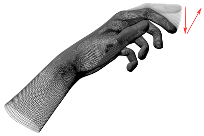

LeapKeyTapGesture Class Reference
| Inherits from | LeapGesture : NSObject |
| Declared in | LeapObjectiveC.h |
Overview
The LeapKeyTapGesture class represents a tapping gesture by a finger or tool.
A key tap gesture is recognized when the tip of a finger rotates down toward the
palm and then springs back to approximately the original postion, as if
tapping. The tapping finger must pause briefly before beginning the tap.

Important: To use key tap gestures in your application, you must enable
recognition of the key tap gesture. You can enable recognition with:
[controller enableGesture:LEAP_GESTURE_TYPE_CIRCLE enable:YES];
Key tap gestures are discrete. The LeapKeyTapGesture object representing a tap always
has the state, LEAP_GESTURE_STATE_STOP. Only one LeapKeyTapGesture object is
created for each key tap gesture recognized.
You can set the minimum finger movement and velocity required for a movement
to be recognized as a key tap as well as adjust the detection window for
evaluating the movement using the config attribute of a connected
LeapController object. Use the following configuration keys to configure key tap
recognition:
| Key string | Value type | Default value | Units |
|---|---|---|---|
| Gesture.KeyTap.MinDownVelocity | float | 50 | mm/s |
| Gesture.KeyTap.HistorySeconds | float | 0.1 | s |
| Gesture.KeyTap.MinDistance | float | 5.0 | mm |
The following example demonstrates how to set the key tap configuration
parameters:
if([controller.config setFloat:@"Gesture.KeyTap.MinDownVelocity" value:40.0] &&
[controller.config setFloat:@"Gesture.KeyTap.HistorySeconds" value:.2] &&
[controller.config setFloat:@"Gesture.KeyTap.MinDistance" value:8.0])
[controller.config save];
Tasks
-
– positionThe position where the key tap is registered.
-
– directionThe direction of finger tip motion.
-
– progressThe progess value is always 1.0 for a key tap gesture.
-
– pointableThe finger performing the key tap gesture.
Instance Methods
direction
The direction of finger tip motion.
- (LeapVector *)directionReturn Value
LeapVector A unit direction vector.
Availability
Since 1.0
Discussion
The direction of finger tip motion.
Declared In
LeapObjectiveC.hpointable
The finger performing the key tap gesture.
- (LeapPointable *)pointableReturn Value
A LeapPointable object representing the tapping finger.
Availability
Since 1.0
Discussion
The finger performing the key tap gesture.
Declared In
LeapObjectiveC.hposition
The position where the key tap is registered.
- (LeapVector *)positionReturn Value
A LeapVector containing the coordinates of key tap location.
Availability
Since 1.0
Discussion
The position where the key tap is registered.
Declared In
LeapObjectiveC.h